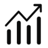
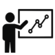

Hi, I'm Lucie Nadvornik
DATA ENGINEER
SUPPORTING COMPANIES FROM RAW DATA TO BUSINESS INSIGHTS

Trusted by companies like
About
Hi, I'm Lucie Nadvornik - data engineer based in Prague, Czechia. With over 6 years of working with data and its utilization in business. Mainly focused on data engineering in AWS ecosystem, data analysis & visualization and lecturing data analytics.
successful
data projects
years in data
field
teaching
data analytics

Certified by


I can help you with
Transforming raw data into valuable, meaningful insights through interactive dashboards and reports. With a focus on business impact, KPI tracking, and effective decision support.
Designing and building scalable, cost-effective, and automated data pipelines using AWS services. Strong in end-to-end data solution delivery and infrastructure automation.
Delivering hands-on data analytics lectures to over than 300 students. Experienced in thesis supervision, final exams, and professional training in online and offline environment.
What others say about me